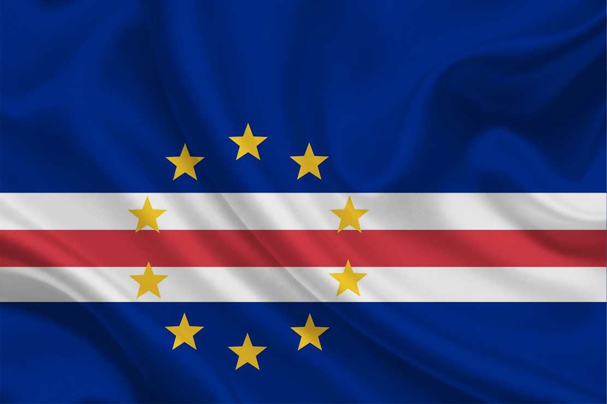

Sobre este site
Neste site falaremos a respeito dos 9 países que tem a lingua portuguesa como nativa, são eles:
 Brasil
Brasil Angola
Angola Cabo Verde
Cabo Verde Guiné-Bissau
Guiné-Bissau Guiné-Equatorial
Guiné-Equatorial Moçambique
Moçambique Portugal
Portugal Timor-Leste
Timor-Leste São Tomé e Príncipe.
São Tomé e Príncipe.
Brasil

População:
214,3 milhões de habitantesTamanho:
8.510.000 km²Conhecido como o páis do futebol e por ter paisagens exuberantes
Informações Oficiais do Brasil: Clique aqui
Hino Oficial do Brasil Clique aqui
Angola

População:
34,5 milhõesTamanho:
1.247.000 km²Angola é um país no sul da África, com um território que abrange praias tropicais do Atlântico, além de um sistema labiríntico de rios e desertos subsaarianos que se estende até a Namíbia
Informações Oficiais de Angola: Clique aqui
Hino Oficial de Angola Clique aqui
Cabo Verde
População:
34,5 milhõesTamanho:
1.247.000 km²Cabo Verde é uma nação localizada em um arquipélago vulcânico perto da costa noroeste da África. O país é conhecido por sua cultura crioula luso-africana, sua tradicional música morna e suas várias praias.
Informações Oficiais de Cabo Verde: Clique aqui
Hino Oficial de cabo verde Clique aqui
Guiné-Bissau

População:
2,061 milhõesTamanho:
36.125 km²Guiné-Bissau é um país tropical na costa atlântica ocidental de África, conhecido pelos parques nacionais e pela vida selvagem.
Informações Oficiais de Guiné-Bissau: Clique aqui
Hino Oficial de Guiné-Bissau:Clique aqui
Guiné-Equatorial

População:
1,634 milhãoTamanho:
28.051 km²A Guiné Equatorial é um país da África Central que inclui a região continental de Rio Muni e 5 ilhas vulcânicas ao largo da costa. A capital é Malabo, na ilha de Bioko, que tem uma arquitetura colonial espanhola e é o centro da indústria petrolífera próspera do país.
Informações Oficiais de Guiné-Equatorial: Clique aqui
Hino Oficial de Guiné-Equatorial:Clique aqui
Moçambique

População:
32,08 milhõesTamanho:
799.380 km²Moçambique é uma nação do sul da África cujo longo litoral no Oceano Índico é permeado de praias conhecidas, como Tofo, e de parques marinhos perto da costa.
Informações Oficiais de Moçambique: Clique aqui
Hino Oficial de Moçambique:Clique aqui
Portugal

População:
10,33 milhõesTamanho:
92.152 km²Portugal é um país no sul da Europa, localizado na Península Ibérica, que faz fronteira com a Espanha. Sua localização às margens do Oceano Atlântico influenciou muitos aspectos da cultura do país: o bacalhau salgado e as sardinhas assadas são pratos típicos nacionais, as praias do Algarve são destinos muito procurados e boa parte da arquitetura do país data dos séculos XVI a XIX, quando Portugal era um poderoso império marítimo.
Informações Oficiais de Portugal: Clique aqui
Hino Oficial de Portugal:Clique aqui
Timor-Leste

População:
1,321 milhãoTamanho:
14.900 km²O Timor-Leste, país no Sudeste Asiático que ocupa metade da ilha de Timor, é cercado por recifes de corais repletos de vida marinha.Clique aqui
Informações Oficiais de Timor-Leste: Clique aqui
Hino Oficial de Timor-Leste:Clique aqui
São Tomé e Príncipe

População:
223.107Tamanho:
1.001 km²São Tomé e Príncipe, um país insular africano perto da linha do equador, faz parte de uma cadeia vulcânica com rochas e formações de corais impressionantes, além de florestas tropicais e praias.
Informações Oficiais de São Tomé e Príncipe: Clique aqui
Hino Oficial de São Tomé e Príncipe:Clique aqui